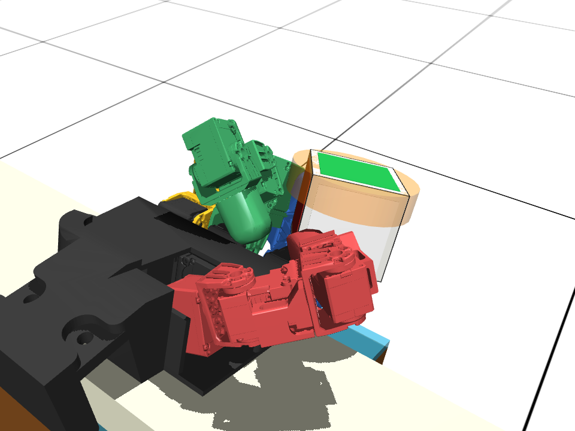

새 기준 모델 한 조건에서 처음 배치 → 수평 약85.94도 회전 → 하단 재파지 → 윗단 공간 확보를 연속 재생했다. 목표90±5도 범위를 통과했다. 큐브 자세를 중간에 초기화하지 않았다.
정확히90도 및 실물 성공을 확인한 결과는 아니다. 큰 하중 한 방향, 새 경로의 배치 오차, 다음 회전 연결과 실제 왼손 통합은 아직 남아 있다. 현재 경로는 약7분40초로 길며 새 실물 실행 명령은 만들지 않았다.
| 최종 회전 | 85.94도, 목표90±5도 |
|---|---|
| 윗면 기울기 | 1.69도 |
| 목표 자세와의 전체 각도 오차 | 4.29도, 기준5도 이내 |
| 윗단 공간 최소 여유 | 0.89mm, 마지막4.05초의 모든4050개 상태 검사 |
| 하단 검지와 엄지 접촉 | 마지막 검사 구간의96.0% |
| 목표 수와 시간 | 6166개, 최대2틱/75ms, 총462.45초 |
| 연속성 | 9개 구간의 목표 경계 일치, 저장 중간 상태 재현 오차0 |
| 동적 기준 | 모든1ms 상태의 원래 관절, 추종, 충돌 기준 통과 |

파랑=검지, 초록=중지, 노랑=약지, 빨강=엄지. 주황 원통은 윗단 작업 공간이다. 색상과 원통은 표시용이다.
오른손이 큐브 전체를 돌리거나 재파지할 때는 윗단 공간을 사용해도 된다. 다른 손 접근 전에 비우고, 접근과 윗단 회전, 퇴각이 끝날 때까지 하단 고정과 공간 여유를 유지한다. 다른 손이 완전히 빠진 뒤 다음 오른손 회전을 시작한다.
기준 조건을 중복 계산하지 않고14조건을 추가했다. 매번 처음 배치부터 전체 경로를 다시 재생했으며 목표90도와 최종 기준 위치를 바꾸지 않았다.
| 바꾼 가설 | 전체 목표 통과 | 동적 기준 통과 |
|---|---|---|
| 배치 ±1mm 또는 ±2도 | 3 / 6 | 3 / 6 |
| 마찰0.2 /0.25 /0.4 /0.5 | 0 / 4 | 1 / 4 |
| 구동 배율0.8 /0.9 /1.1 /1.2 | 0 / 4 | 2 / 4 |
한 번에 한 변수만 바꾼 시험이다. 마찰과 구동 가설의 변화에서 실패가 남아 실물 반복성을 인증하지 않는다.
새 파지에서 관절 목표를 고정하고 전체 강체 큐브에 회전 하중을 주었다. 실제 왼손과 분리된 윗단을 함께 실행한 결과는 아니다.
| 가정 하중 N·m | 결과 | 몸통 최대 회전 | 윗단 공간 최소 여유 |
|---|---|---|---|
| +0 | 통과 | 0.25도 | 0.69mm |
| -0.003 | 통과 | 1.25도 | 0.79mm |
| +0.003 | 통과 | 0.67도 | 0.85mm |
| -0.01 | 미달 | 4.38도 | 0.84mm |
| +0.01 | 통과 | 2.95도 | 0.40mm |
−0.01N·m에서 몸통이4.38도 움직여3도 기준을 넘었다. 힘만 높이는 방법과 완전한 모델 자세를 이용하는 피드백도 비교했다. 후자는 실제 카메라나 SAC 제어가 아니다.
| 모델 보정 조건 | 통과/3조건 |
|---|---|
| force | 1/3 |
| hybrid | 2/3 |
| hybrid_gentle_fast | 2/3 |
| hybrid_gentle_faster | 1/3 |
| hybrid_gentle_slow | 2/3 |
| hybrid_low_fast | 1/3 |
| hybrid_low_slow | 2/3 |
| hybrid_medium_fast | 2/3 |
각 조건은0와±0.01N·m의10.05초 시험이다. 실패는 숨기지 않았으며 회전, 기울기, 이동과 공간 여유를 모두 확인했다. 실제 구동 설정은 바꾸지 않았다.
이전 약63도 경로는 전체 모델27/27, 손만9/9, 배치 오차25/27, 비영 반력14/18이었다. 이 횟수는 이전 후보에만 해당한다. 새6166목표 경로는 별도로14개 단일 변수 오차 조건을 검사했으며 위 표에 미달을 포함해 표시했다. 결합 오차 행렬과 실물 반복 시험은 아직 미확인이다.
새 경로의 관절 토크 한도0.15N·m와 마찰0.3은 모델 가정이다. 실제450mA를 환산한 값이 아니다. 모터 전류와PID, 원래 관절 한계 및 충돌 형상을 바꾸지 않았다. 윗단을 분리한 이전 별도 모델6조건은 통과했으나, 새 경로의 끝 상태와 연결해 검증한 결과는 아니다.
현재 성공 범위는 선택한 초록 윗면을 유지하는 수평 방향 변경이다. 윗면을 다른 색 면으로 바꾸는 회전 경로는 별도 검증이 필요하다.
현재 기기를 연결하거나 추가로 촬영할 필요는 없다. 실물 실행 준비가 끝나면 빈손 복귀부터 별도 안내한다.